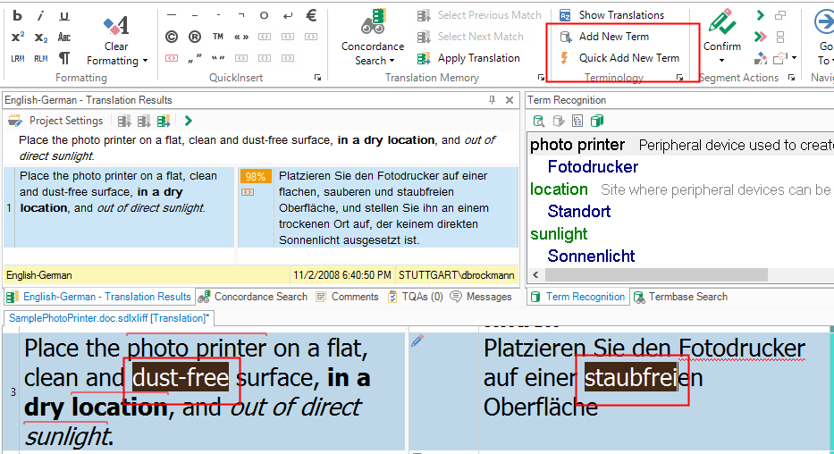
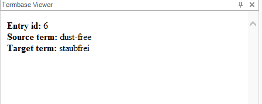
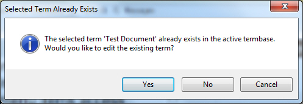
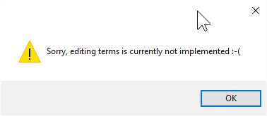

Adding Terms
Configure your custom terminology provider to support adding and editing terminology entries. This article explains simplified functionality for adding source and target terms to a delimited text list.
In Trados Studio, you can add source and target terms on the fly by marking them in the Editor and then clicking either Add New Term or Quick Add New Term.

In the standard, MultiTerm-based implementation of Trados Studio:
- Add New Term opens an editor control in the Termbase Viewer window so you can modify terms before saving.
- Quick Add New Term adds the term pair directly to the terminology source and displays the newly created entry in the Termbase Viewer window.
In this simplified implementation, no editing function is provided, so both buttons perform the same action.
To implement this behavior:
- Open the MyTerminologyProviderViewerWinFormsUI.cs class and go to the AddTerm() function.
- Trados Studio passes the selected source and target terms through the source and target string parameters.
- Implement the following steps:
- Open the glossary text file.
- Loop to the end of the text file while counting lines to determine the next entry ID.
- Insert the new source and target terms (with an empty definition).
- Display the newly created entry in the Internet Explorer control of the Termbase Viewer window.
#region "Enable term adding and editing
public bool CanAddTerm => true;
public bool IsEditing => true;
#endregion
#region "AddTerms"
//Triggered when the Studio user selects a source (and target) term, and then clicks the
//corresponding button for adding the term or term pair to the glossary.
//We loop through all existing term pairs to retrieve the next possible entry id,
//then we append the term or term pair to the text file.
public void AddTerm(string source, string target)
{
string fileName = _terminologyProvider.fileName.Replace("file:///", "");
StreamReader glossaryFile = new StreamReader(fileName);
int i = 0;
while (!glossaryFile.EndOfStream)
{
i++;
glossaryFile.ReadLine();
}
glossaryFile.Close();
int newEntryId = i + 1;
StreamWriter outFile = new StreamWriter(fileName, true);
outFile.WriteLine((newEntryId.ToString() + ";" + source + ";" + target + ";"));
outFile.Close();
//Show added entry in web browser control of the Termbase Viewer window
string tmpFile = System.IO.Path.GetTempPath() + "simple_list_entry.htm";
StreamWriter previewFile = new StreamWriter(tmpFile);
previewFile.Write("<html><body><b>Entry id:</b> " + newEntryId.ToString() +
"<br/><b>Source term:</b> " + source +
"<br/><b>Target term:</b> " + target +
"</body></html>");
previewFile.Close();
termControl.SetNavigation(tmpFile);
}
When a new source/target term pair is added, the following appears in the Termbase Viewer window:

You can also implement your terminology provider to support editing. However, this simplified example does not add editing functionality. Supporting editing would require an editing control in the Termbase Viewer window. For now, the AddAndEditTerm() function in the MyTerminologyProviderViewerWinFormsUI.cs class outputs a message:
#region "AddEditTerm"
public void AddAndEditTerm(Entry term, string source, string target)
{
MessageBox.Show("Sorry, editing terms is currently not implemented :-(", "", MessageBoxButtons.OK, MessageBoxIcon.Warning);
}
#endregion
If you try to add a term that already exists, Trados Studio displays a message that prompts you to:
- Edit the entry by clicking Yes.
- Add the term again, risking a duplicate entry, by clicking No.
- Cancel the entire add operation by clicking Cancel.

If you click Yes to edit the entry, the following message box is displayed in this implementation and the Termbase Viewer window remains empty. In a real implementation, the entry content is shown in an edit control where you can still modify it.
